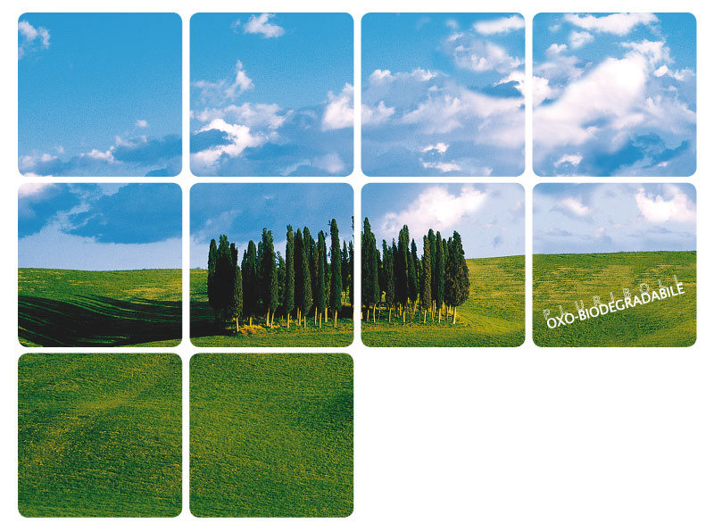

Home / Ecologia
Un imballo più attento all'ambiente
Recupero degli scarti e materiali a minore impatto.
Niente sprechi
Gli scarti di lavorazione diventano materiale di riempimento e gli estrusori del pluriboll recuperano in linea il bordo di rifilo.
Pluriboll oxo-biodegradabile
Abbiamo portato in Italia un pluriboll oxo-biodegradabile che, secondo quanto dichiarato dall'azienda, si riduce in polvere assimilabile dal terreno in circa 18 mesi.
